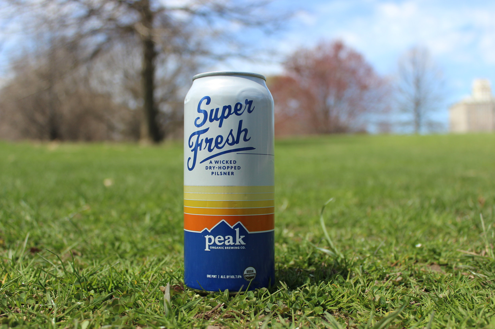

HOME
LAGER
Super Fresh
Peak Organic Brewing Co.
This is Fresh Cut’s assertive big brother. A wicked dry-hopped pilsner. Dripping with juicy, citrus hop character, this beer is a blast of deliciousness. SUGGESTED FOOD PAIRINGS: Lime & Cilantro, a variety of chilies, Thai & Vietnamese dishes, jerk and Cajun spices.
Located in Portland, Maine, Peak Organic Brewing Comapny's mission is to source the finest ingredients to brew the best beer.
Check out their site HERE 